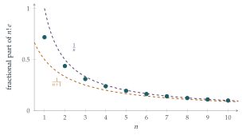

This section uses two questions. The first, from 1997, proves that \(e\) is irrational. The second, from 2024, uses a cleverer version of the same idea to prove that \(e^2\) is irrational, which turns out to be genuinely harder.
STEP III 1997, Question 7
Read the question before you go on. It is in the STEP Support Programme’s question database: step.maths.org/questions/97-s3-q7
STEP III 2024, Question 7
Read the question before you go on. It is in the STEP III paper in OCR’s download of the 2024 STEP papers (a zip file): www.ocr.org.uk/Images/725753-2024-past-papers.zip
The hook
In Section 1.3 we proved that \(\sqrt2\) is irrational using the fact that \(\sqrt2\) satisfies a simple equation, \(x^2 = 2\). But \(e\) doesn’t satisfy any such equation that we know of. All we have is its series, \[e = 1 + \frac{1}{1!} + \frac{1}{2!} + \frac{1}{3!} + \cdots.\] How can a series tell you that a number is not a fraction?
The answer is one of the most useful ideas in number theory: a whole number cannot lie strictly between \(0\) and \(1\). If you can show that some quantity is a whole number, and also that it is strictly between \(0\) and \(1\), you have a contradiction. Everything in this section is a variation on that theme.
Before you start
Suppose \(e = p/q\). Multiplying \(e\) by \(q\) gives an integer. What does multiplying by \(q!\) do to each term of the series for \(e\)?
Multiplying \(\dfrac{1}{k!}\) by \(q!\) gives an integer whenever \(k \leq q\). So \(q!\,e\) splits into a whole-number part (the first \(q+1\) terms) and a “tail” (everything after). If \(e = p/q\) then \(q!\,e\) is itself an integer, so the tail must be an integer too. The plan is to show the tail is strictly between \(0\) and \(1\).
Working it through
Stage 1 The warm-up: \(e\) is irrational
The series \(b_n\) is geometric with first term and ratio both \(\frac{1}{n+1}\), so \[b_n = \frac{1/(n+1)}{1 - 1/(n+1)} = \frac{1}{n}.\]
Compare \(a_n\) and \(b_n\) term by term. Which is bigger?
The first terms are equal. After that, \((n+1)(n+2) > (n+1)^2\), and in general \((n+1)(n+2)\cdots(n+k) > (n+1)^k\) for \(k \geq 2\), so each later term of \(a_n\) is smaller than the corresponding term of \(b_n\). Hence \(0 < a_n < b_n = 1/n\).
Now look at what \(a_n\) really is. Multiply the series for \(e\) by \(n!\): \[n!\,e = \underbrace{\frac{n!}{0!} + \frac{n!}{1!} + \cdots + \frac{n!}{n!}}_{\text{an integer}} + \underbrace{\frac{n!}{(n+1)!} + \frac{n!}{(n+2)!} + \cdots}_{=\,a_n}.\] Since \(0 < a_n < 1\), the integer part of \(n!\,e\) is the first bracket and \(a_n\) is the fractional part: \(a_n = n!\,e - [n!\,e]\).
Now finish the proof. Suppose \(e = p/q\). Which value of \(n\) should you choose?
Take \(n = q\). Then \(q!\,e = (q-1)!\,p\) is an integer, so its fractional part \(a_q\) is \(0\). But \(a_q > 0\). Contradiction: \(e\) is irrational.■
This proof is due to Joseph Fourier, in about 1815.
Stage 2 Why \(e^2\) is harder
Try the same idea on \(e^2\). Its series is \(\sum 2^k/k!\). What goes wrong when you multiply by \(n!\) and look at the tail?
The tail is now \(\dfrac{2^{n+1}}{n+1} + \dfrac{2^{n+2}}{(n+1)(n+2)} + \cdots\), and the powers of \(2\) ruin everything: the tail is no longer small. Multiplying by \(n!\) doesn’t help with the \(2^k\) in the numerators.
The 2024 question’s trick is to avoid \(e^2\) altogether. If \(e^2 = p/q\), then \[qe = \frac{p}{e}.\] Now we have two numbers, \(e\) and \(1/e\), each with a factorial series and no troublesome powers of \(2\): \[e = \sum_{k=0}^{\infty} \frac{1}{k!}, \qquad \frac1e = \sum_{k=0}^{\infty} \frac{(-1)^k}{k!}.\]
Stage 3 The two tails
Part (i) is exactly the warm-up: \(0 < f(n) < 1/n\).
For part (ii), \(g(n)\) is an alternating series whose terms decrease in size.
For an alternating series \(t_1 - t_2 + t_3 - \cdots\) with \(t_1 > t_2 > t_3 > \cdots > 0\), why is the sum between \(0\) and \(t_1\)?
Group the terms in pairs: \((t_1 - t_2) + (t_3 - t_4) + \cdots\) is a sum of positive brackets, so it is positive. Group them the other way: \(t_1 - (t_2 - t_3) - (t_4 - t_5) - \cdots\) is \(t_1\) minus positive brackets, so it is less than \(t_1\). Here \(t_1 = \frac{1}{n+1}\), and the terms decrease because each is the previous one divided by something bigger than \(1\). So \(0 < g(n) < \frac{1}{n+1}\).
Stage 4 Integers again
Multiply \(e\) by \((2n)!\) and split off the tail, exactly as in the warm-up: \[(2n)!\,e = (\text{integer}) + f(2n).\] So \((2n)!\,e - f(2n)\) is an integer. Now do the same for \(1/e\): \[\frac{(2n)!}{e} = \sum_{k=0}^{2n} (-1)^k \frac{(2n)!}{k!} + \sum_{k=2n+1}^{\infty} (-1)^k \frac{(2n)!}{k!}.\]
What is the sign of the first term of the tail, \(k = 2n+1\)? How does the tail compare with \(g(2n)\)?
The first term of the tail has \(k = 2n+1\), which is odd, so it is negative. The tail is \[-\frac{1}{2n+1} + \frac{1}{(2n+1)(2n+2)} - \cdots = -g(2n).\] So \(\dfrac{(2n)!}{e} + g(2n)\) is an integer.■
This is why the question uses \(2n\) rather than \(n\): with an even multiplier, the tail of \(1/e\) is exactly \(-g\), with a predictable sign.
Stage 5 The contradiction
Suppose \(qe = p/e\). Multiply both sides by \((2n)!\) and use Stage 4: \[q\bigl(\text{integer} + f(2n)\bigr) = p\bigl(\text{integer} - g(2n)\bigr).\] Rearranging, \(q f(2n) + p g(2n)\) equals a combination of integers, so it is an integer. That is part (iv).
Now use the bounds from Stage 3. What happens to \(q f(2n) + p g(2n)\) when \(n\) is very large?
Both \(f(2n)\) and \(g(2n)\) are positive, so \(q f(2n) + p g(2n) > 0\). And \[q f(2n) + p g(2n) < \frac{q}{2n} + \frac{p}{2n+1} < \frac{p+q}{2n}.\] Choose \(n > (p+q)/2\). Then \(q f(2n) + p g(2n)\) is an integer strictly between \(0\) and \(1\). That is impossible, so \(e^2\) is irrational.■

Looking back
The engine is “no integer lies strictly between 0 and 1”. Both proofs build a quantity that must be an integer and then trap it.
Factorials make tails small. Multiplying by \(n!\) turned the start of the series into integers and left a tail that shrinks like \(1/n\).
When a direct attack fails, rearrange. Rather than attacking \(e^2 = p/q\) head-on, we rewrote it as \(qe = p/e\), which spread the difficulty across two easier numbers.
The details matter. The choice of \(2n\) rather than \(n\) fixed the sign of a tail. Many proofs hinge on a small detail like this.
What’s really going on
Joseph Liouville proved in 1840 that \(e^2\) is irrational, and in fact that it doesn’t satisfy any quadratic equation with integer coefficients. In 1873 Charles Hermite went much further: he proved that \(e\) is transcendental, meaning it is not a root of any polynomial with integer coefficients. His proof is a sophisticated version of exactly the argument above: build an integer, show it is strictly between \(0\) and \(1\). Nine years later Ferdinand von Lindemann adapted Hermite’s method to show that \(\pi\) is transcendental, finally proving that the ancient problem of “squaring the circle” with ruler and compass is impossible.
What we still don’t know
For all the power of these methods, embarrassingly simple questions remain open. Is \(e + \pi\) irrational? Is \(e\pi\)? Nobody knows, although at least one of them must be transcendental (exercise 4). Is \(\zeta(3) = 1 + \frac{1}{8} + \frac{1}{27} + \cdots\) irrational? Yes: Roger Apéry astonished the mathematical world by proving it in 1978. Is \(\zeta(5)\)? Nobody knows.
Approximation
Behind these proofs lies a deeper idea: a number is irrational if it can be approximated by fractions too well. The partial sums of the series for \(e\) are fractions that get very close to \(e\) very quickly; a fraction can’t be approximated by other fractions that well. This is the starting point of Diophantine approximation, a branch of number theory you can explore further in Section 2.9, where a different family of integrals produces even better fractions closing in on \(e\).
The thinking skill
To prove a number is irrational, assume it is a fraction, build from it a quantity that must be a whole number, and show that the quantity is strictly between \(0\) and \(1\).
The art lies in choosing the quantity. Here, multiplying by a factorial made most of a series into integers and left a tail that was small but positive.
Try this next
Using \(1/e\) alone. Prove that \(e\) is irrational by supposing \(1/e = p/q\) and using only the alternating series for \(1/e\).
\(\sin 1\) is irrational. Use \(\sin 1 = 1 - \dfrac{1}{3!} + \dfrac{1}{5!} - \cdots\) to prove that \(\sin 1\) is irrational. (Multiply by a suitable odd factorial.)
Why not \(\pi\)? Explain why this method doesn’t work directly for \(\pi\). Then look up Ivan Niven’s one-page proof (1947) that \(\pi\) is irrational, which uses an integral instead of a series. It is within reach of a strong A-level student.
One of them is transcendental. harder Show that \(e\) and \(\pi\) are the roots of \(x^2 - (e+\pi)x + e\pi = 0\). You may assume that a root of a polynomial whose coefficients are algebraic numbers is itself algebraic, and that \(\pi\) is not algebraic (Lindemann). Deduce that at least one of \(e + \pi\) and \(e\pi\) is transcendental.
Further reading
Aigner & Ziegler, Proofs from THE BOOK, Chapter 8, “Some irrational numbers”. Proves that \(e\), \(e^2\), \(e^4\) and \(\pi^2\) are irrational, using exactly these ideas.
Ivan Niven, Irrational Numbers (Mathematical Association of America). A short classic covering everything from \(\sqrt2\) to transcendence.
Julian Havil, The Irrationals (Princeton University Press). A readable history of irrational numbers.